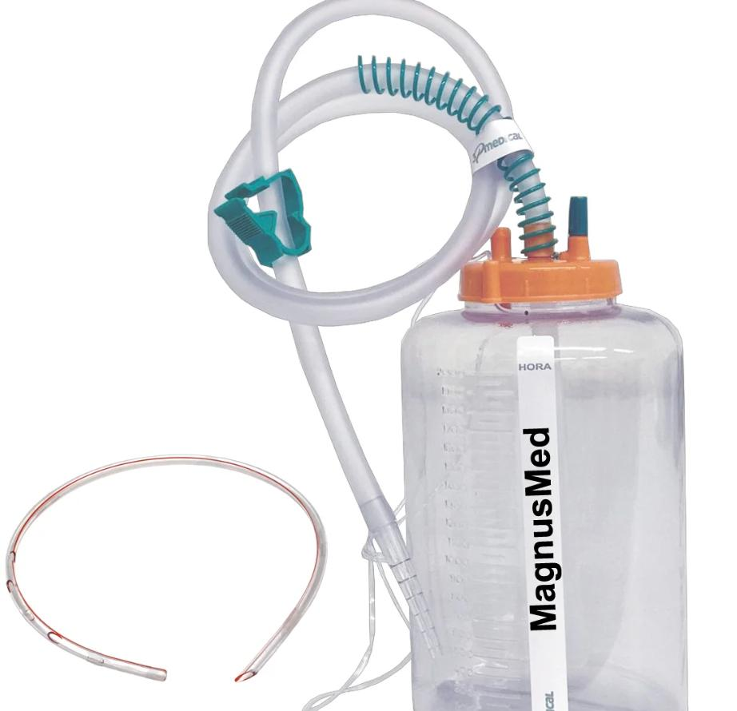

Drenagem Torácica (Dreno de Tórax)
Conceito e Finalidade
A drenagem torácica é um procedimento para restaurar a pressão negativa do espaço pleural (normal: −12 a −8 cmH₂O), permitindo a retirada de ar, líquido ou sangue acumulados.
Funções: profilática, terapêutica, diagnóstica
Indicações
| Conteúdo a drenar | Condição clínica |
|---|---|
| Ar | Pneumotórax (traumático, iatrogênico, espontâneo com instabilidade) |
| Sangue | Hemotórax |
| Líquido | Derrame pleural volumoso, empiema, quilotórax |
| Ar + Sangue | Hemopneumotórax |
Pneumotórax hipertensivo: agulha de alívio imediata (2º EIC, linha hemiclavicular) ANTES do dreno
Sítio de Inserção
| Conteúdo | Local preferencial | Motivo |
|---|---|---|
| Líquido/sangue | 5º EIC, linha axilar média ou anterior | Fluido acumula na base (gravidade) |
| Ar (pneumotórax) | 2–3º EIC, linha hemiclavicular | Ar sobe para o ápice |
Regra da costela superior: sempre dissecar e inserir acima da borda superior da costela inferior — o feixe vásculo-nervoso intercostal corre na borda inferior de cada costela
Material Necessário
- Dreno torácico (tubular, silicone, fenestrado, marcação radiopaca): n° 28–32 Fr adulto
- Campo estéril, luvas estéreis, avental
- Antisséptico: clorexidina alcoólica 2% (deixar secar)
- Anestesia local: lidocaína 1–2% s/vasoconstritor
- Bisturi, pinça Kelly (hemostática curva)
- Fio de sutura não absorvível (nylon 0 ou 1) para fixação
- Sistema de drenagem com selo d'água (3 frascos ou sistema comercial fechado)
- Equipamento de proteção: óculos, máscara
Checklist — Passos do Procedimento
Preparo
0/5 marcados
Antissepsia e Anestesia
0/4 marcados
Incisão e Dissecção
0/6 marcados
Inserção do Dreno
0/4 marcados
Fixação e Curativo
0/4 marcados
Sistema de Drenagem com Selo D'água

`` [ Câmara de coleta ] → [ Câmara de selo d'água ] → [ Câmara de sucção ] ``
- Câmara de coleta: acumula o líquido drenado (medir e registrar)
- Câmara de selo d'água: impede refluxo de ar/líquido para o tórax (coluna de 2 cm H₂O)
- Câmara de sucção: aspiração ativa regulada (−20 cmH₂O)
Sinais normais:
- Flutuação com a respiração = posição correta
- Borbulhamento intermitente = drenagem de ar (esperado no início)
- Borbulhamento contínuo = vazamento aéreo persistente (fístula broncopleural?)
Retirada do Dreno
- Quando: drenagem < 100–150 mL/24h + pulmão expandido no RX
- Técnica: pedir ao paciente para realizar manobra de Valsalva (ou apneia expiratória) → retirar rapidamente → curativo oclusivo imediato
- RX de tórax após retirada para confirmar ausência de pneumotórax
Complicações
| Complicação | Causa |
|---|---|
| Lesão do feixe vásculo-nervoso | Inserção abaixo da borda inferior da costela |
| Laceração pulmonar / cardíaca | Uso de trocater ou inserção sem cuidado |
| Empiema | Técnica não estéril |
| Posição incorreta do dreno | Dreno intraparenquimatoso ou extracavitário |
| Edema de reexpansão | Drenagem rápida de grande volume (> 1.500 mL de uma vez) |
| Enfisema subcutâneo | Orifício do dreno exteriorizado |
Alertas OSCE ⚠️
- Sempre dissecção acima da costela inferior — lesão do feixe neurovascular intercostal = complicação grave
- Pneumotórax hipertensivo = agulha de alívio ANTES do dreno (não esperar RX)
- Flutuação da coluna d'água confirma posição intrapleural; ausência de flutuação = obstrução do dreno (dobrado?) ou pulmão totalmente expandido
- Sistema coletor sempre abaixo do nível do tórax (evitar refluxo)
- Nunca clampear dreno sem indicação médica específica
- Não drenar > 1.500 mL de uma vez (risco de edema de reexpansão)
Fonte
- Gerado a partir de:
conteudo_drenos_e_sondas.md(Aula 9 — Drenos e Sondas — Cirurgia UNISA)